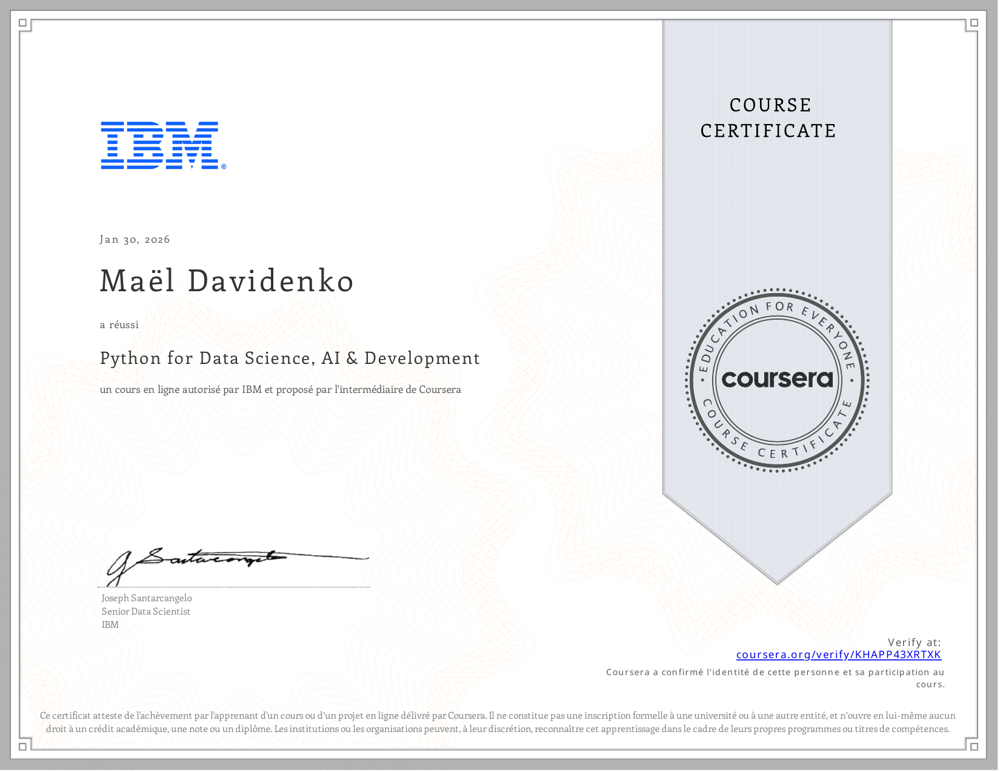
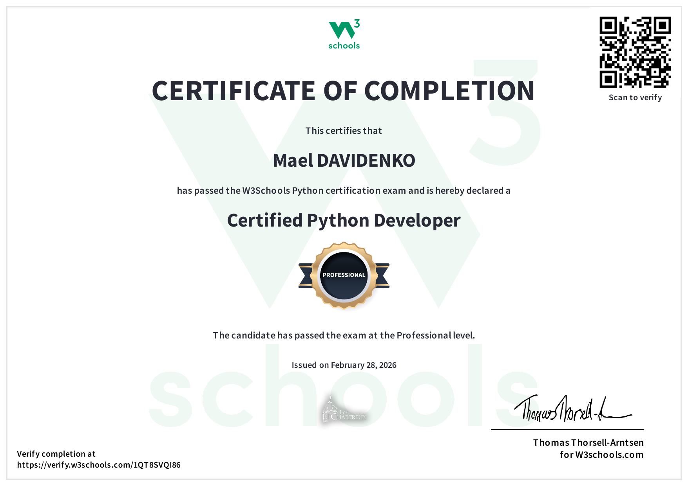

Construction de mon environnement d'apprentissage et de mon identité professionnelle
De la Casio 90+E aux certifications Python
J'ai commencé par écrire des jeux en Python sur une calculatrice Casio 90+E. Cette réalisation raconte comment ce point de départ est devenu un environnement d'apprentissage organisé : deux certifications, des plateformes d'entraînement, une identité professionnelle assumée.
Le point de départ
Mon appétence pour le développement est née d'un support minuscule : une calculatrice Casio 90+E, sur laquelle j'écrivais des jeux en Python. C'est ce qui m'a conduit à choisir l'option SLAM (Solutions Logicielles et Applications Métiers) plutôt que SISR.
Une contrainte matérielle aussi serrée apprend une chose durable : ce qui compte n'est pas la puissance de l'outil, mais la clarté de ce que l'on demande à la machine.
Mon environnement d'apprentissage
Ma méthode de travail est constante, et je l'ai appliquée telle quelle en stage : la documentation officielle d'abord, l'expérimentation en local ensuite, la mise en pratique sur le vrai projet enfin. Elle a servi pour Docker comme pour le format WXR de WordPress, deux sujets que je ne connaissais pas avant le stage.
- Certifications - deux parcours achevés et évalués, en Python (voir ci-dessous).
- Plateformes d'entraînement, TryHackMe et Root-Me, pour la pratique de la sécurité offensive et défensive.
- Environnement de développement, PhpStorm, Docker et Portainer pour isoler chaque projet, Git pour l'historique.
- Identité professionnelle, CV et profil sur réseau professionnel, tenus à jour et cohérents avec ce portfolio.
Mes certifications
Deux certifications obtenues durant l'année scolaire 2025-2026, l'une académique et longue, l'autre technique et ciblée :
- IBM - Python for Data Science, AI & Development (Coursera, 30 janvier 2026).
- W3Schools - Certified Python Developer, niveau Professional (28 février 2026).
En images


Les preuves
Les documents ci-dessous constituent les traces de cette réalisation. Leur état indique s'ils sont consultables ici, confidentiels, ou encore non publiés.
- Certification IBM - Python for Data Science, AI & Development Consultable Certification Coursera - 30 janvier 2026. Vérifiable en ligne.
- Certification W3Schools - Certified Python Developer (Professional) Consultable Certification Niveau Professional - 28 février 2026. Vérifiable en ligne.
- Profils TryHackMe et Root-Me Non publié Profils
- CV et profil professionnel Non publié Identité
Ce que cette réalisation démontre
Compétence 1.6 : Organiser son développement professionnel
- Mettre en place son environnement d'apprentissage personnel : outils, méthode et plateformes explicités.
- Mettre en œuvre des outils et stratégies de veille informationnelle : voir la page Veille.
- Gérer son identité professionnelle : portfolio, CV, profil professionnel et dépôt public cohérents.
- Développer son projet professionnel : trajectoire SLAM assumée et documentée.
Ce que j'en retiens
« Se former n'est pas un supplément au métier : c'est le métier, exercé sur soi-même. »